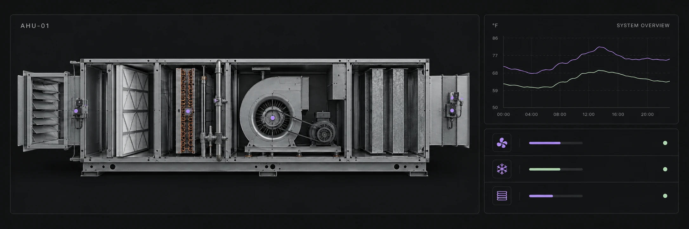
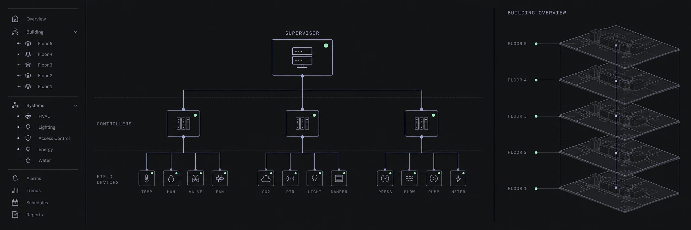

Engineering.
Without
boundaries.
Niagara. Honeywell. Alerton. Ignition.
Controls engineering, programming, analytics, and remote commissioning—connected by design.
THE VISUAL THINKING OF BITDASH GRAPHICS.
THE ENGINEERING TO TAKE IT FURTHER.
Building automation engineering.
Every system considered.
Great graphics show you what’s happening. Great engineering makes it happen. We bring controls drawings, sequences, programming, graphics, analytics, and remote commissioning together. Your building automation project moves forward with a coordinated engineering extension to your team.
Your complete engineering extension ↗From first drawing.
To final handover.


Design intent.
Meet live logic.
Explore a simplified air-handling sequence.
Change a condition. See the system respond.
Interactive illustration · Not connected to live equipment
Inside the air.
Explore the equipment behind the sequence. Adjust the conditions and watch the response.
Temperature units °F / Fahrenheit
Supply fan
A direct-drive plenum fan moves conditioned air into the supply duct. Fan enable follows occupancy and the safety interlock.

See the detail.
Explore graphics and project films. ↗

Find your platform.
Niagara, Honeywell, Alerton, Ignition and more. ↗